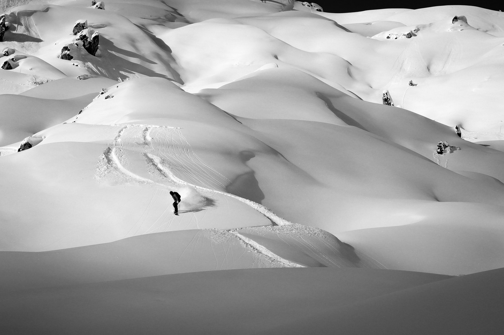
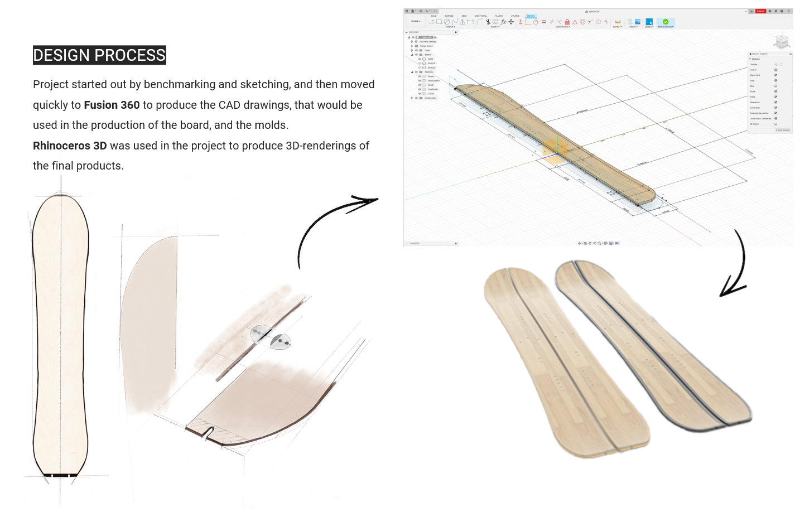
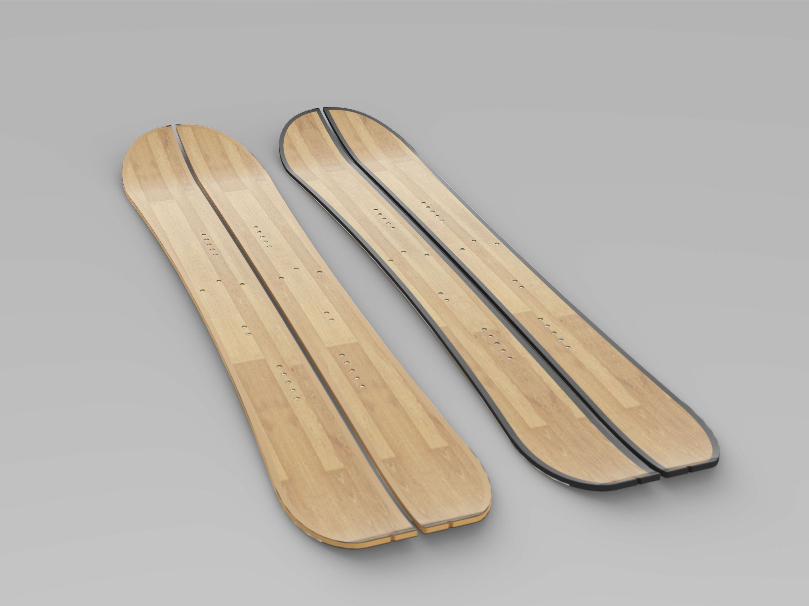
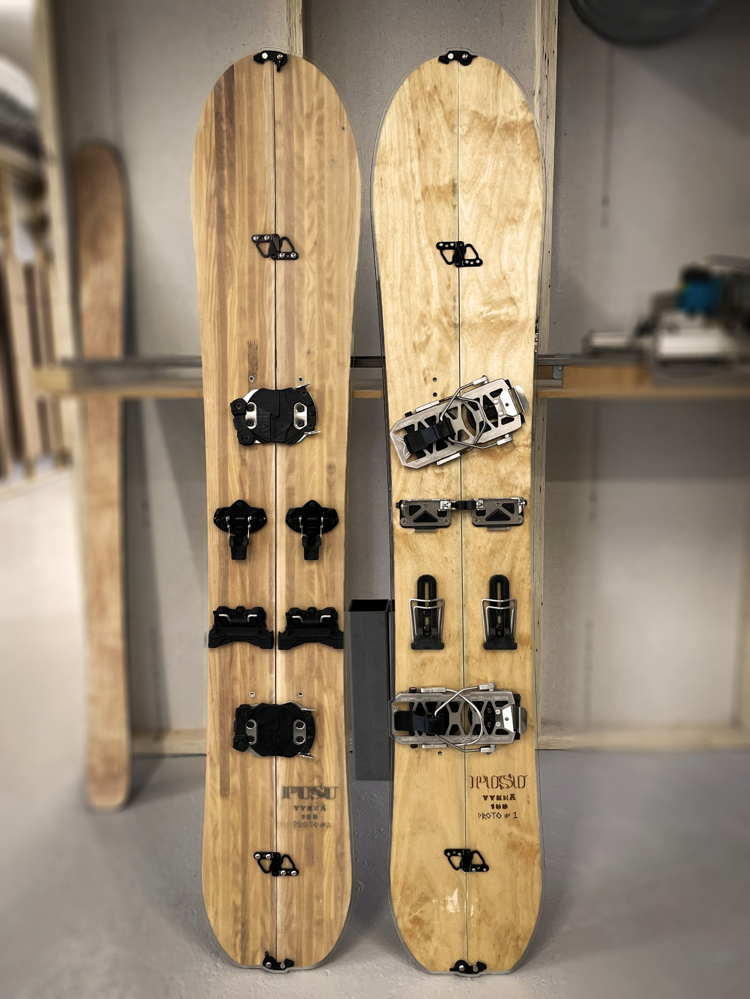
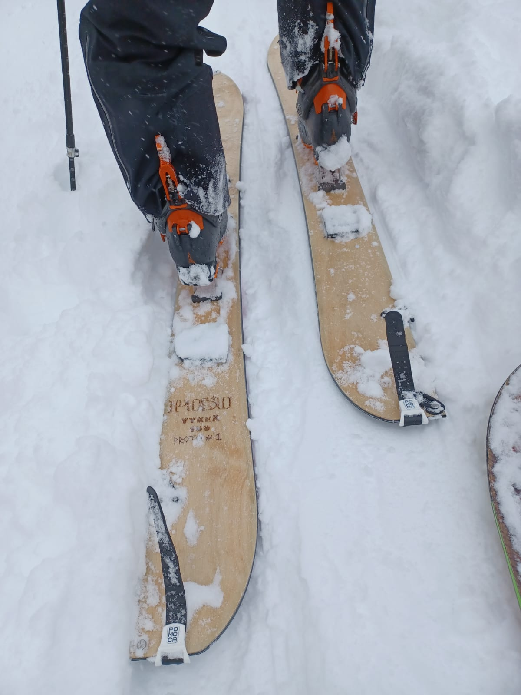
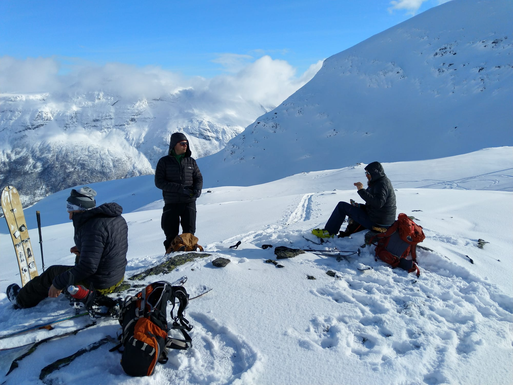

Yykeä Splitboard

As part of my Master’s thesis, I designed and prototyped a new splitboard model in collaboration with Finnish ski and snowboard manufacturer PUSU, whose products focus strongly on sustainable manufacturing and materials. The project explored both the board design and ways to develop a more efficient and sustainable production process through design and prototyping.
I was involved in the process from initial benchmarking and CAD design to developing molds, jigs and two functional prototypes with different core and sidewall materials. The boards were field-tested in the Lyngen Alps in Norway and Finnish Lapland, with the findings used to develop further design and manufacturing proposals for PUSU. The project provided hands-on experience of developing a product and its manufacturing process from concept to field testing, with sustainability considered throughout the process.





